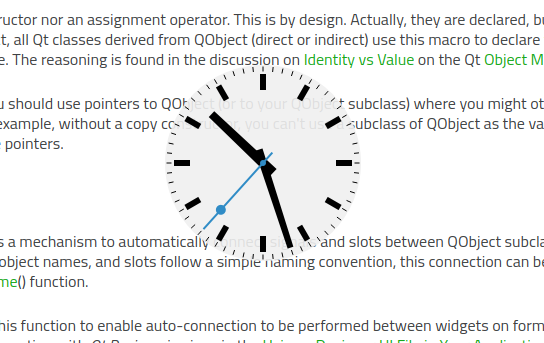
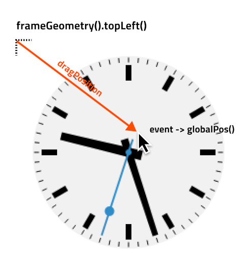

Translucent Background
The example shows how to make a round window with a translucent background.

Widgets that set their background to be translucent will be transparent for all unpainted pixels, and the background will shine through pixels painted with an opacity of less than 100%. Pixels that are not painted at all will also not receive any mouse input. This can be used to customize the shapes of top-level widgets. On most window systems, setting certain window flags will cause the window decoration (title bar, window frame, buttons) to be disabled, allowing specially-shaped windows to be created. In this example, we use this feature to create a circular window containing an analog clock.
Since this example's window does not provide a File menu or a close button, we provide a context menu with an Exit entry so that the example can be closed. Click the right mouse button over the window to open this menu.
ShapedClock Class Definition
The ShapedClock class is based on the AnalogClock class defined in the Analog Clock example. The whole class definition is presented below:
class ShapedClock : public QWidget { Q_OBJECT public: ShapedClock(QWidget *parent = nullptr); QSize sizeHint() const override; protected: void mouseMoveEvent(QMouseEvent *event) override; void mousePressEvent(QMouseEvent *event) override; void paintEvent(QPaintEvent *event) override; private: QPoint dragPosition; };
The paintEvent() implementation draws an analog clock on a semi-transparent background (the clock face). In addition, we implement sizeHint() so that we don't have to resize the widget explicitly.
Since the window containing the clock widget will have no title bar, we provide implementations for mouseMoveEvent() and mousePressEvent() to allow the clock to be dragged around the screen. The dragPosition variable lets us keep track of where the user last clicked on the widget.
ShapedClock Class Implementation
The ShapedClock constructor sets up a timer and connect it to the widget's update() slot. In addition, we add an action to the widget, which will automatically become available through a context menu when right-clicking on the widget.
ShapedClock::ShapedClock(QWidget *parent) : QWidget(parent, Qt::FramelessWindowHint | Qt::WindowSystemMenuHint) { setAttribute(Qt::WA_TranslucentBackground); QTimer *timer = new QTimer(this); connect(timer, &QTimer::timeout, this, QOverload<>::of(&ShapedClock::update)); timer->start(1000); QAction *quitAction = new QAction(tr("E&xit"), this); quitAction->setShortcut(tr("Ctrl+Q")); connect(quitAction, &QAction::triggered, qApp, &QCoreApplication::quit); addAction(quitAction); setContextMenuPolicy(Qt::ActionsContextMenu); setToolTip(tr("Drag the clock with the left mouse button.\n" "Use the right mouse button to open a context menu.")); setWindowTitle(tr("Shaped Analog Clock")); }
We request a transparent window by setting the Qt::WA_TranslucentBackground widget attribute. We inform the window manager that the widget is not to be decorated with a window frame by setting the Qt::FramelessWindowHint flag on the widget. As a result, we need to provide a way for the user to move the clock around the screen.
Mouse button events are delivered to the mousePressEvent() handler:
void ShapedClock::mousePressEvent(QMouseEvent *event) { if (event->button() == Qt::LeftButton) { dragPosition = event->globalPosition().toPoint() - frameGeometry().topLeft(); event->accept(); } }
If the left mouse button is pressed over the widget, we record the displacement in global (screen) coordinates between the top-left position of the widget's frame (even when hidden) and the point where the mouse click occurred. This displacement will be used if the user moves the mouse while holding down the left button. Since we acted on the event, we accept it by calling its accept() function.

The mouseMoveEvent() handler is called if the mouse is moved over the widget.
void ShapedClock::mouseMoveEvent(QMouseEvent *event) { if (event->buttons() & Qt::LeftButton) { move(event->globalPosition().toPoint() - dragPosition); event->accept(); } }
If the left button is held down while the mouse is moved, the top-left corner of the widget is moved to the point given by subtracting the dragPosition from the current cursor position in global coordinates. If we drag the widget, we also accept the event.
The paintEvent() function is mainly the same as described in the Analog Clock example. The one addition is that we use QPainter::drawEllipse() to draw a round clock face. We reduce the painter's opacity to 90%, and use the palette's default background color.
void ShapedClock::paintEvent(QPaintEvent *) { static const QPoint hourHand[4] = { QPoint(5, 14), QPoint(-5, 14), QPoint(-4, -71), QPoint(4, -71) }; static const QPoint minuteHand[4] = { QPoint(4, 14), QPoint(-4, 14), QPoint(-3, -89), QPoint(3, -89) }; static const QPoint secondsHand[4] = { QPoint(1, 14), QPoint(-1, 14), QPoint(-1, -89), QPoint(1, -89) }; const QColor hourColor(palette().color(QPalette::Text)); const QColor minuteColor(palette().color(QPalette::Text)); const QColor secondsColor(palette().color(QPalette::Accent)); int side = qMin(width(), height()); QPainter painter(this); painter.setRenderHint(QPainter::Antialiasing); painter.translate(width() / 2, height() / 2); painter.scale(side / 200.0, side / 200.0); painter.setPen(Qt::NoPen); painter.setBrush(palette().window()); painter.setOpacity(0.9); painter.drawEllipse(QPoint(0, 0), 98, 98); painter.setOpacity(1.0); QTime time = QTime::currentTime(); painter.setPen(Qt::NoPen); painter.setBrush(hourColor); painter.save(); painter.rotate(30.0 * ((time.hour() + time.minute() / 60.0))); painter.drawConvexPolygon(hourHand, 4); painter.restore(); for (int i = 0; i < 12; ++i) { painter.drawRect(73, -3, 16, 6); painter.rotate(30.0); } painter.setBrush(minuteColor); painter.save(); painter.rotate(6.0 * time.minute()); painter.drawConvexPolygon(minuteHand, 4); painter.restore(); painter.setBrush(secondsColor); painter.save(); painter.rotate(6.0 * time.second()); painter.drawConvexPolygon(secondsHand, 4); painter.drawEllipse(-3, -3, 6, 6); painter.drawEllipse(-5, -68, 10, 10); painter.restore(); painter.setPen(minuteColor); for (int j = 0; j < 60; ++j) { painter.drawLine(92, 0, 96, 0); painter.rotate(6.0); } }
Finally, we implement the sizeHint() for the widget so that it is given a reasonable default size when it is first shown:
QSize ShapedClock::sizeHint() const { return QSize(200, 200); }